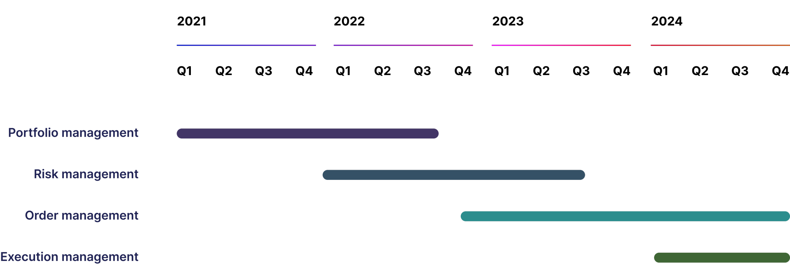

Clear Street Client Portal
Version 1 of the client-facing site focused on delivering portfolio management functionality for institutional and active investors.
Knowing that there are established “best-practices” when it comes to daily reports (the primary function of portfolio management) we decided that the best approach would be delivering as quickly as possible the functionality versus doing robust foundational research. The portal aims to deliver on-demand reporting for active traders and institutions.
We approached the design with a few design principles:
Do the math: Find opportunities to infer the intent of our users and deliver the information before they ask for it.
Don't try to out-excel excel: Many of our clients just need to pull raw reports to put into other tools to make it easy for them.
Less isn't always more: Look for ways to deliver a clear information hierarchy and, where possible, reduce noise. Sometimes people need all the information they can get. But understand that there is a reason why a Bloomberg terminal looks the way it does.
Something now is sometimes better than right: It is vital for us to get signal. Never skip research and stay curious, but there are things we can launch fast and iterate.
@2x.png)
Opportunities to leapfrog other portfolio management portals
While creating the baseline portal we kept in mind that delivering something and then getting “signal” earlier is vital. However there would be a few opportunities for us to vastly improve on certain aspects of the experience. An example of this is “trade away” and specifically “trade away breaks” which is when a trade makes a trade off platform and the information we get is different than the information the user gave us.
We started with foundational interviews of currently clients that us other off-us tools and how they performed their tasks. Then bringing in the product, engineering, and SME’s into several rounds of co-design sessions.
After the co-design session we moved into design and prototyping.
Example screens for Clearstreet’s v1 client portal focusing on portfolio management functionality.
V2 and beyond
A high level timeline of the portal

Example in-progress V2 screens of the portal adding “dark-mode” and Risk Management functionality.